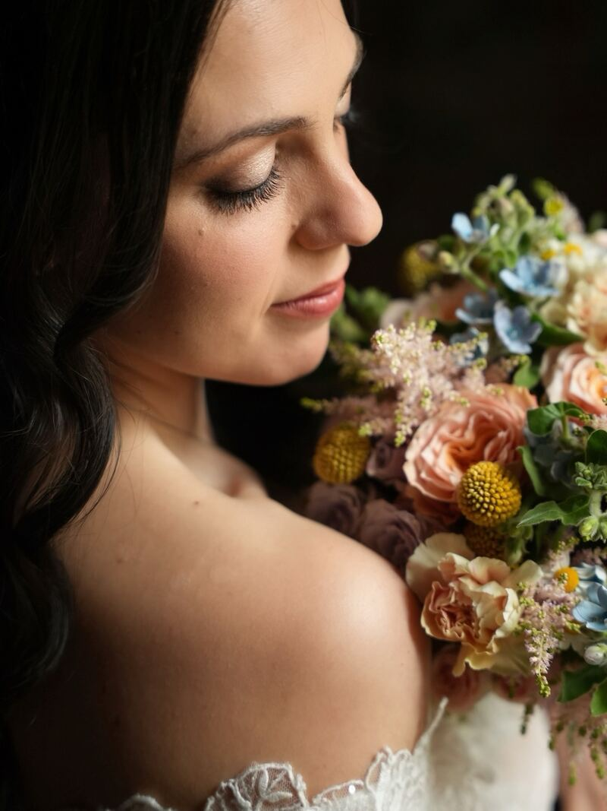
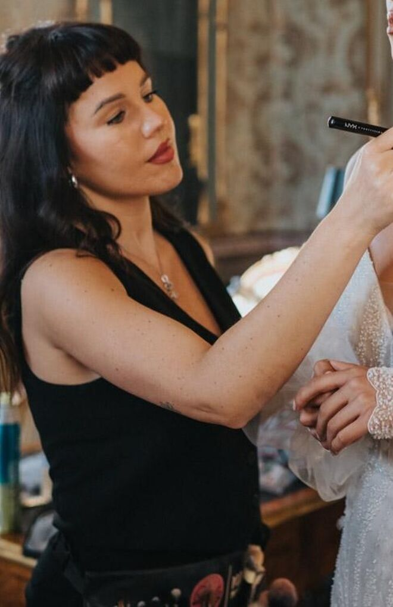
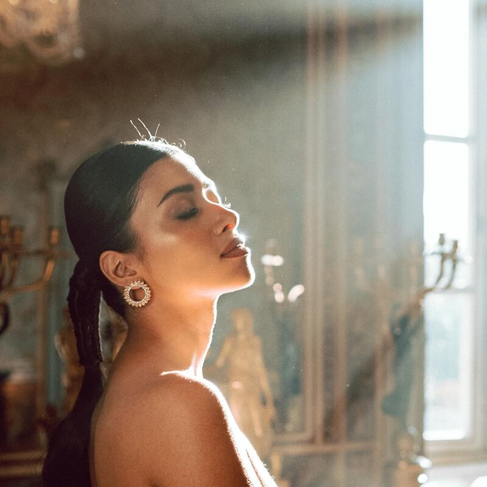
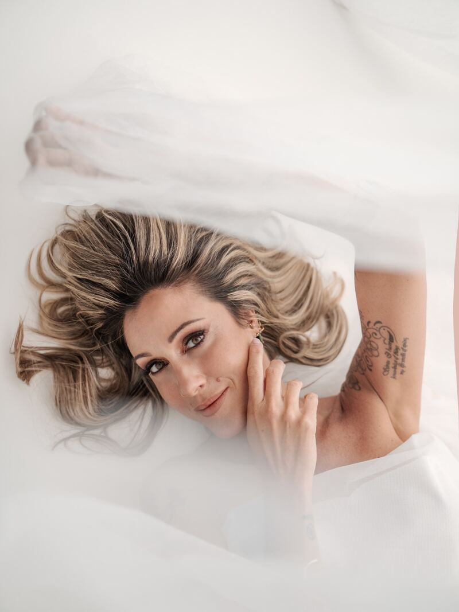
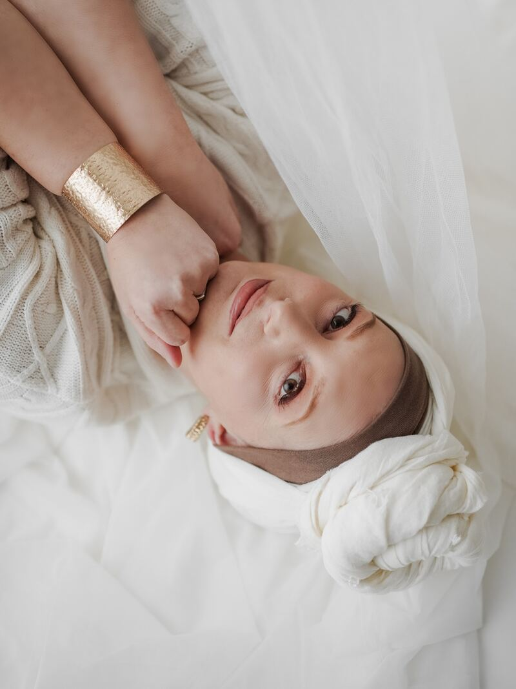

Spose reali
Trucco sposa 01
Il trucco del tuo giorno, costruito sul tuo viso, sull'abito e sulla luce della giornata.
Richiedi info
Trucco sposa, corsi di self makeup e armocromia. Accanto alle spose dal 2015.
Sono Federica, makeup artist certificata. Dal 2015 preparo le spose a Torino e in tutto il Piemonte.
Il trucco deve somigliarti: sei sempre tu, nella tua versione più luminosa. Parto dalla pelle, la preparo su misura, e solo dopo costruisco il resto.


Modulata in base al tipo di pelle e alle esigenze di ogni cliente. È il primo passo, il fondamento di ogni mio makeup: è ciò che gli garantisce tenuta e finish impeccabili.
Una base leggerissima, fresca e radiosa. Lavoro i prodotti con cura, senza stratificarli, per garantire estremo comfort e un finish in stile hollywoodiano.
[DA COMPLETARE: il terzo punto del post «3 elementi chiave dei miei makeup sposa»]
Il trucco del tuo giorno, costruito sul tuo viso, sull'abito e sulla luce della giornata.
Richiedi info
Impari a truccarti da sola, passo per passo, con gesti semplici da rifare ogni giorno a casa.
Richiedi info
Scopri i colori che ti illuminano il viso: per il trucco, per i capelli e per quello che indossi.
Richiedi infoAnche trucco per eventi e sfilate.
Scrivimi data e luogoSpose, ritratti e servizi editoriali: ogni trucco pensato sul viso di chi lo indossa.
Altri lavori, ogni settimana, su Instagram.
@federicasiviero_beautyCorsi di self makeup e consulenze di armocromia, per conoscere il tuo viso e i colori che ti stanno bene.
Scrivimi due righe: ti rispondo io e confermiamo insieme disponibilità e dettagli. Non c'è nessuna prenotazione automatica.